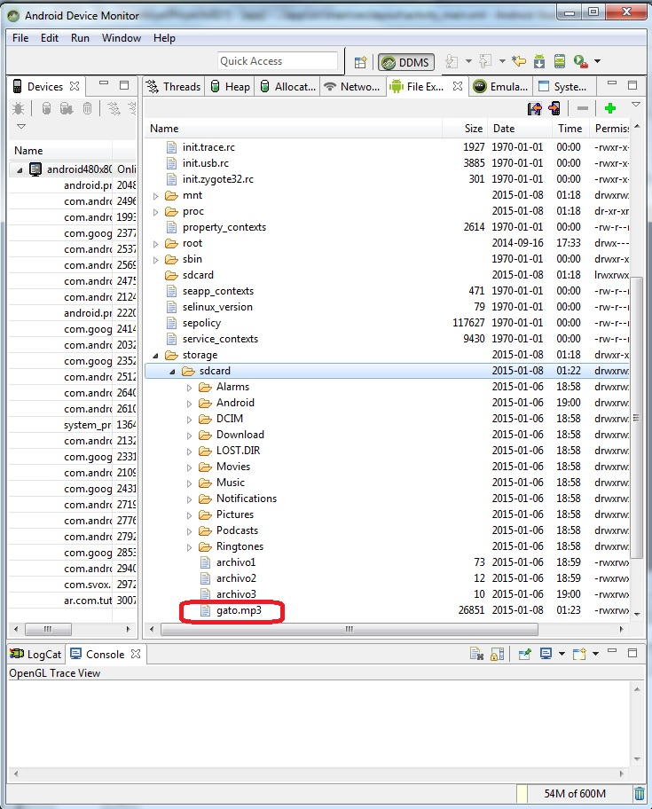
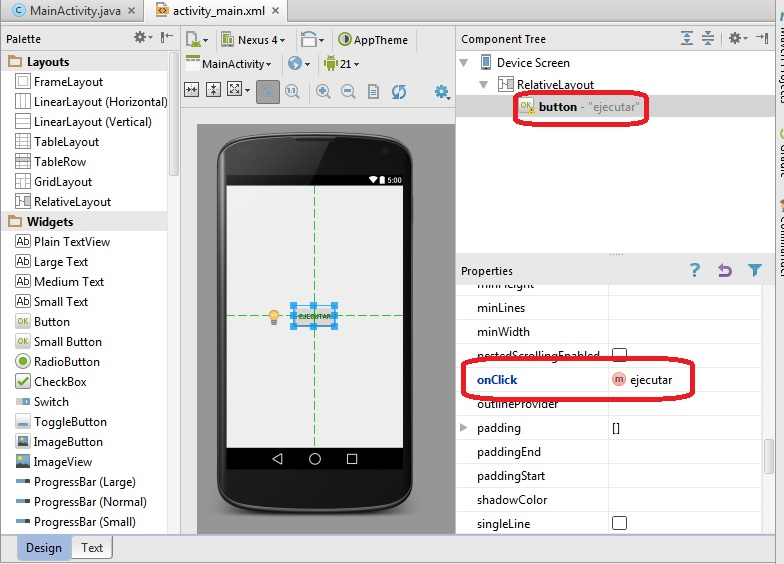
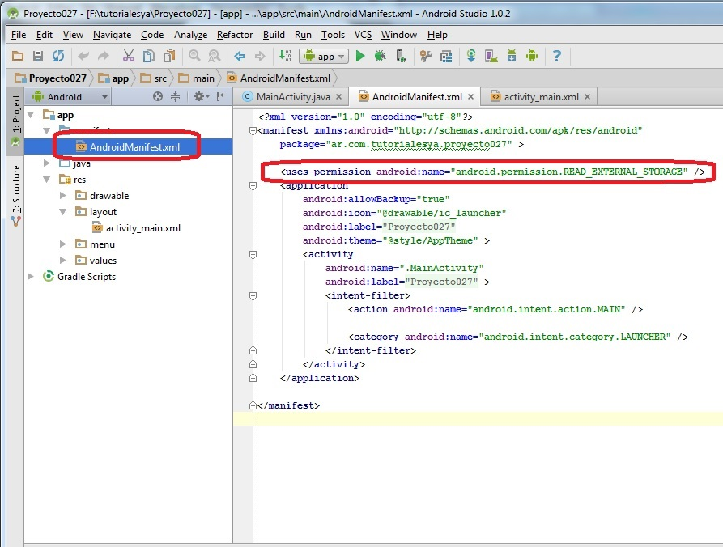

El objetivo de este concepto es acceder a un archivo mp3 almacenado en la tarjeta SD de nuestro equipo (tener en cuenta que esto solo funciona con un equipo que dispone la capacidad de tarjeta SD) Debemos utilizar un emulador que tenga configurado tarjeta SD.
Problema:
Disponer un botón con la etiqueta: "gato", luego cuando se presione reproducir el archivo de audio respectivo. El archivo de sonido almacenarlo en la tarjeta SD.
Luego de crear el proyecto (Proyecto027) debemos ejecutar la aplicación para poder acceder a la tarjeta SD que crea el emulador Android.
Una vez que se este ejecutando la aplicación (no importa que todavía no hemos implementado su funcionalidad) procedemos a abrir la ventana "Android Device Monitor". Seleccionamos del menú de opciones de Tools->Android->Android Device Monitor.
En la carpeta storage/sdcard debemos subir el archivo mp3 (debemos seleccionar esta carpeta con el mouse)
Esto lo hacemos mediante un botón que aparece en la parte derecha de esta ventana "Push a file onto device", luego de esto tenemos el archivo montado en la tarjeta SD:

Luego de subirlo debe aparecer dentro de la lista de archivos que tiene la tarjeta SD:
Ahora implementemos la interfaz de nuestra aplicación (un solo botón) que cuando se presione llame al método ejecutar:
El código fuente es:
package ar.com.tutorialesya.proyecto027;
import android.media.MediaPlayer;
import android.net.Uri;
import android.os.Environment;
import android.support.v7.app.ActionBarActivity;
import android.os.Bundle;
import android.view.Menu;
import android.view.MenuItem;
import android.view.View;
public class MainActivity extends ActionBarActivity {
@Override
protected void onCreate(Bundle savedInstanceState) {
super.onCreate(savedInstanceState);
setContentView(R.layout.activity_main);
}
@Override
public boolean onCreateOptionsMenu(Menu menu) {
// Inflate the menu; this adds items to the action bar if it is present.
getMenuInflater().inflate(R.menu.menu_main, menu);
return true;
}
@Override
public boolean onOptionsItemSelected(MenuItem item) {
// Handle action bar item clicks here. The action bar will
// automatically handle clicks on the Home/Up button, so long
// as you specify a parent activity in AndroidManifest.xml.
int id = item.getItemId();
//noinspection SimplifiableIfStatement
if (id == R.id.action_settings) {
return true;
}
return super.onOptionsItemSelected(item);
}
public void ejecutar(View v) {
Uri datos = Uri.parse(Environment.getExternalStorageDirectory()
.getPath() + "/gato.mp3");
MediaPlayer mp = MediaPlayer.create(this, datos);
mp.start();
}
}
Creamos un objeto de la clase Uri llamando al método parse donde indicamos el path y nombre del archivo a recuperar:
Uri datos = Uri.parse(Environment.getExternalStorageDirectory().getPath() +"/gato.mp3");
Creamos el objeto de la clase MediaPlayer pasando ahora la referencia del objeto de la clase Uri:
MediaPlayer mp=MediaPlayer.create(this, datos);
Iniciamos la reproducción del mp3:
mp.start();
Otro paso importante antes de ejecutar la aplicación es agregar el permiso de leer la tarjeta SD, para ello modificamos el archivo AndroidManifest.xml agregando este permiso:
Este proyecto lo puede descargar en un zip desde este enlace:
proyecto027.zip
Recordar que para ejecutar este proyecto se debe subir un archivo mp3 llamado "gato.mp3" a la tarjeta SD.